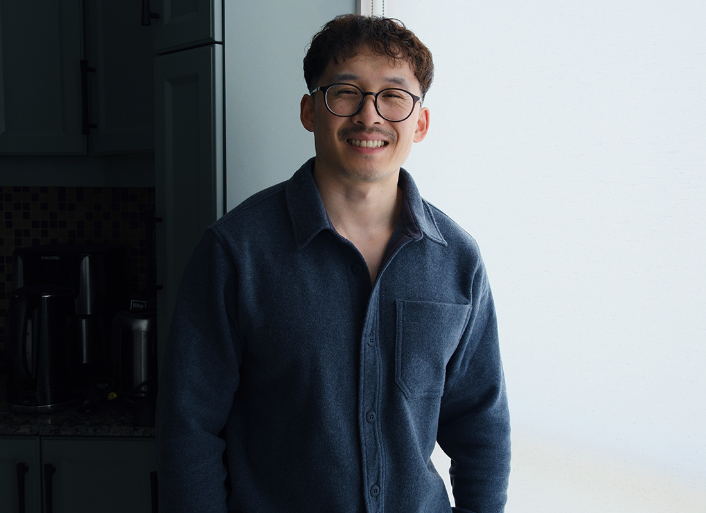

Through my 5+ years of experience, I've worked in-house and at top award-winning agencies such as Wunderman Thompson, VML and T&Pm while teaming up with legendary brands like Audible, Marvel, Riot Games, Mazda, RYU Apparel and The Princess Margaret Cancer Foundation. As a queer Asian Canadian designer homegrown in Montréal, bridging the gap between storytelling, empathic design and inclusivity is important to me. On paper I am a graphic designer and videographer but in truth, I am a visual wizard in your arsenal with limitless courage and imagination ready to take on any beast of a challenge that comes our way.
LinkedIn - linkedin.com/in/kevglam